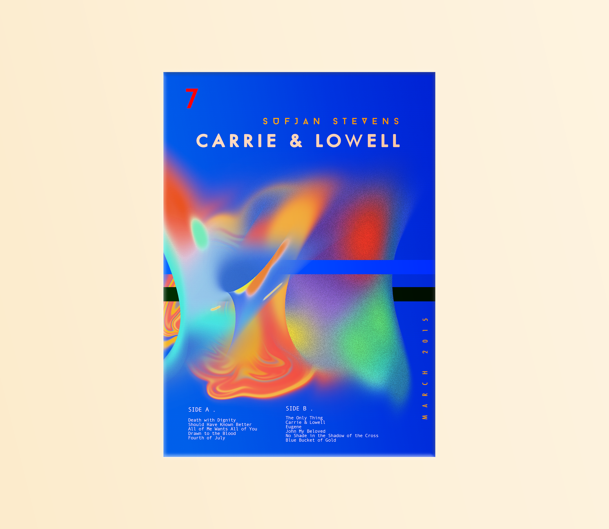

ALBUM POSTERS
This is a collection of posters that I've designed for a few albums that I really enjoy. I used Procreate on my iPad Pro for the digital illustrations, and Adobe Photoshop and Illustrator for the rest of the designs.


Back to work